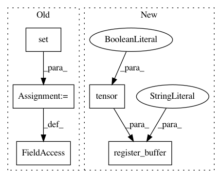

2de52a8976971da4836727ba9242fedcc7474878,src/sdk/pynni/nni/compression/torch/weight_rank_filter_pruners.py,WeightRankFilterPruner,__init__,#WeightRankFilterPruner#Any#Any#,18
Before Change
super().__init__(model, config_list)
self.mask_calculated_ops = set() // operations whose mask has been calculated
def get_mask(self, base_mask, weight, num_prune):
raise NotImplementedError("{} get_mask is not implemented".format(self.__class__.__name__))
After Change
super().__init__(model, config_list)
self.register_buffer("if_calculated", torch.tensor(False)) // pylint: disable=not-callable
def get_mask(self, base_mask, weight, num_prune):
raise NotImplementedError("{} get_mask is not implemented".format(self.__class__.__name__))
In pattern: SUPERPATTERN
Frequency: 3
Non-data size: 5
Instances
Project Name: microsoft/nni
Commit Name: 2de52a8976971da4836727ba9242fedcc7474878
Time: 2020-01-16
Author: 656569648@qq.com
File Name: src/sdk/pynni/nni/compression/torch/weight_rank_filter_pruners.py
Class Name: WeightRankFilterPruner
Method Name: __init__
Project Name: microsoft/nni
Commit Name: 2de52a8976971da4836727ba9242fedcc7474878
Time: 2020-01-16
Author: 656569648@qq.com
File Name: src/sdk/pynni/nni/compression/torch/pruners.py
Class Name: SlimPruner
Method Name: __init__
Project Name: microsoft/nni
Commit Name: 2de52a8976971da4836727ba9242fedcc7474878
Time: 2020-01-16
Author: 656569648@qq.com
File Name: src/sdk/pynni/nni/compression/torch/activation_rank_filter_pruners.py
Class Name: ActivationRankFilterPruner
Method Name: __init__